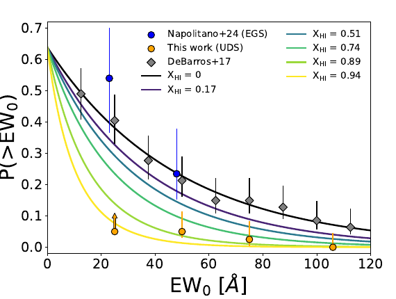

JWST misses a measurable fraction of extended Lyα
Reconciling JWST and ground-based measurements requires an average slit loss of about 35 ± 10%. SPICE predicts losses of roughly 26–37%, with the bursty model giving the closest central match.
Collaborator study · JWST + SPICE
A 651-galaxy census follows Lyα from redshift 4.5 to 11. The UDS field appears substantially more neutral near redshift seven than the EGS field, revealing the patchiness of reionisation.

The line is produced inside galaxies, scattered through their surrounding gas, filtered by observing apertures, and finally attenuated by intergalactic hydrogen.
The study assembles a large, homogeneous spectroscopic sample in the UDS field and measures the fraction and equivalent-width distribution of Lyα emitters over more than half a billion years. It compares those statistics with lower-redshift benchmarks and with the EGS field at similar redshift.
Before inferring the neutral fraction, the authors test an observational systematic: narrow JWST microshutters miss spatially extended Lyα emission that wider ground-based apertures can include.
Reconciling JWST and ground-based measurements requires an average slit loss of about 35 ± 10%. SPICE predicts losses of roughly 26–37%, with the bursty model giving the closest central match.
The Lyα equivalent-width distribution implies a volume-averaged neutral hydrogen fraction of roughly 0.7–0.9, subject to the assumptions of the transmission model.
EGS appears close to ionised at a similar epoch. The contrast exceeds a simple smooth-redshift narrative and instead supports large field-to-field variations in reionisation topology.
Spatial and redshift associations identify candidate bubbles with physical radii near 0.6 and 0.5 Mpc. Their modest sizes are consistent with a substantially neutral surrounding medium.
By producing spatially extended Lyα emission and measuring it through mock apertures, SPICE separates an instrumental selection effect from genuine intergalactic attenuation.
This is a consequential role. Without the slit-loss calibration, field-to-field comparisons can attribute missing flux entirely to neutral hydrogen. After accounting for the galaxy-scale and aperture contribution, the residual difference still points to a patchy IGM.
Interpretation boundary: the inferred neutral fraction depends on the intrinsic Lyα distribution and transmission framework. The strongest conclusion is the contrast between fields and the need to model apertures consistently.